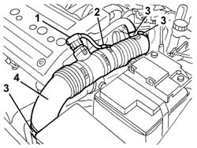
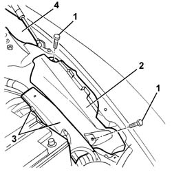
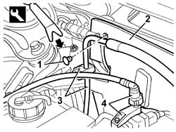
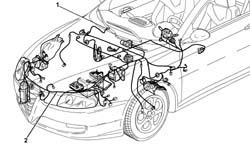

5505C29 INTERGRATED ENGINE BAY AND ABS SYSTEM WIRING - R R WITH FOULING PARTS REMOVED
- Path
- Procedures > 55 ELECTRICAL EQUIPMENT > 5505 INSTRUMENT/GUAGE ELECTRICAL WIRING > 5505C VEHICLE COMPARTMENT WIRING > 5505C29 INTERGRATED ENGINE BAY AND ABS SYSTEM WIRING - R R WITH FOULING PARTS REMOVED
- Kind
- repair procedure (removal / refitting; the operation number is the code)
- Applies to
- all engines; all production periods
- Interactive page
- https://sloeber94.github.io/elrnDB-aGt/en/#/125001597
Applies to: engines: 1.8 T.SPARK; all production periods
Applies to: all engines; all production periods
 Removing
Removing
 Refitting
Refitting1. Working in the engine compartment, disconnect the flowmeter's electrical connection.
2. Disconnect the wiring from the band.
3. Disconnect the bands fastening the pipe from the filter to the throttle casing.
4. Remove the pipe from the filter to the throttle casing.

Applies to: all engines; all production periods
1. Remove the bolts securing the plastic trim on the left side of the engine compartment.
2. Remove the plastic trim.
3. Open the wiring duct.
3. Undo the bulkhead trim retaining studs using the appropriate tool.
4. Remove the two side buffers.

Applies to: all engines; all production periods
1. Disengage the bulkhead trim retaining buttons using the special tool.
 | Name | Country |
|---|---|---|
1 | Scraper blade | 1.823.015.000 |
2. Move the cover.
3. Disconnect the fuel pipe from the band.
4. Undo the bolt and move the pipe.

Applies to: all engines; all production periods
Move aside the carpeting and the parts necessary for removal of the engine compartment and ABS integrated wiring.
1. Disconnect the electrical connections and retainers of the engine compartment and ABS integrated wiring.
2. Remove the wiring from the engine compartment.

Applies to: all engines; all production periods
Refitting
RemovingCheck that the engine compartment and ABS integrated wiring is not damaged and that the individual conductors are firmly attached to the connections.
Check that the connections are fitted with the anti-slip devices (secondary lock).
If necessary, check the continuity.
Refit the engine compartment and ABS integrated wiring, via the engine compartment.
Connect the electrical connections .
Secure the engine compartment and ABS integrated wiring retainers.
Refit and secure the carpeting and the parts moved or removed to remove the engine compartment integrated wiring.
Fit the pipe and tighten the bolt.
Connect the fuel pipe to the band.
Fit the two side buffers in their seatings.
Fit the bulkhead trim and secure it with the retaining buttons.
Close the wiring duct.
Refit the plastic trim.
Position the pipe from the filter to the throttle casing and secure it using the bands.
Connect the wiring to the band.
Connect the flow meter electrical connection.